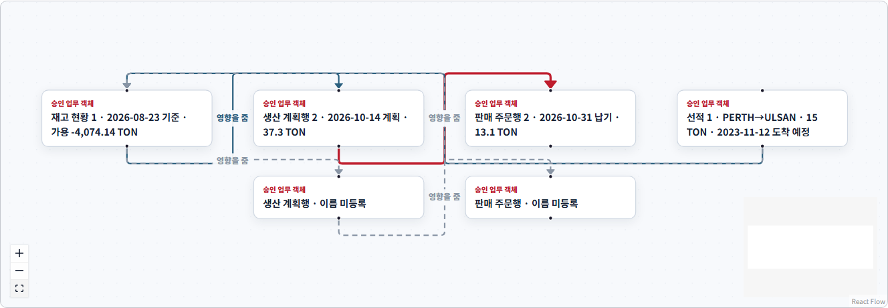
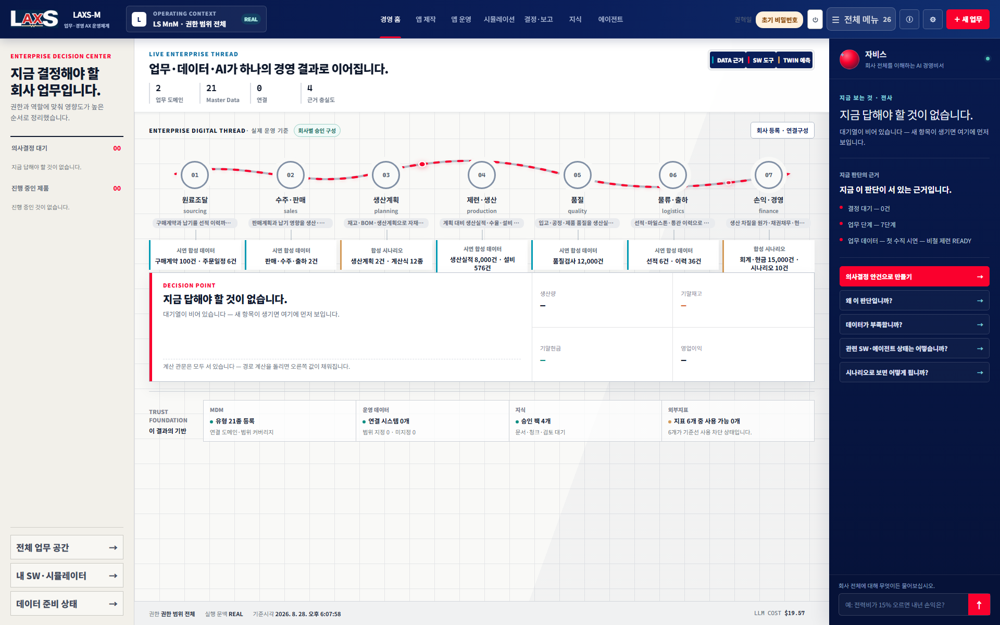
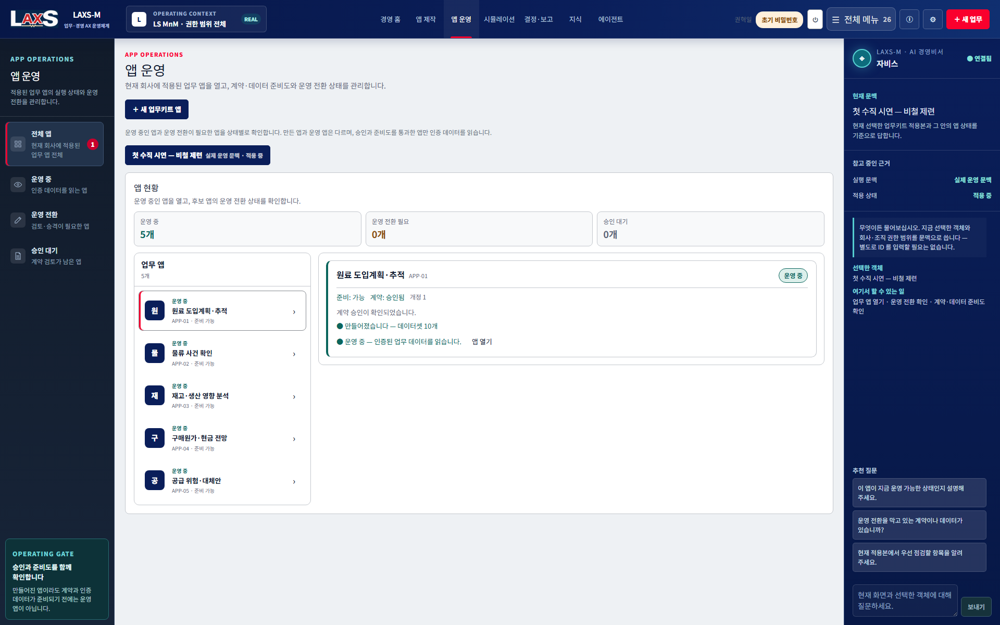
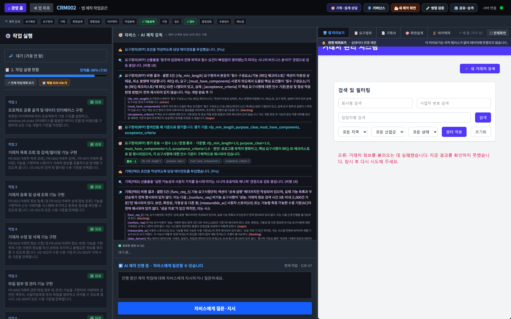
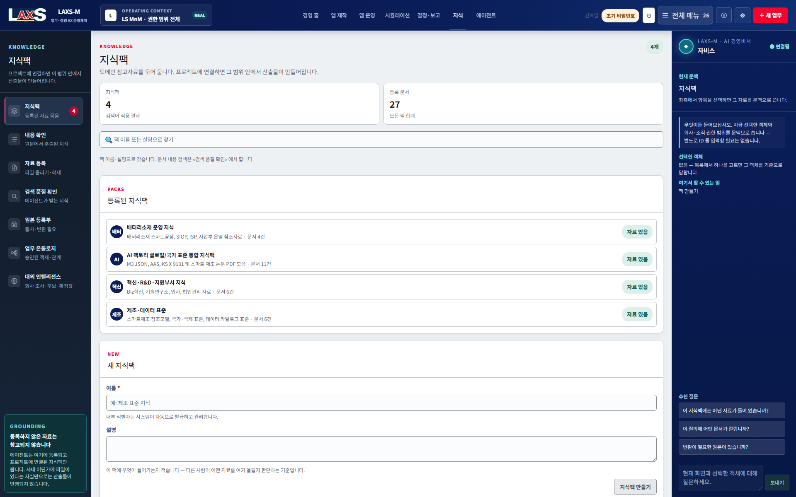
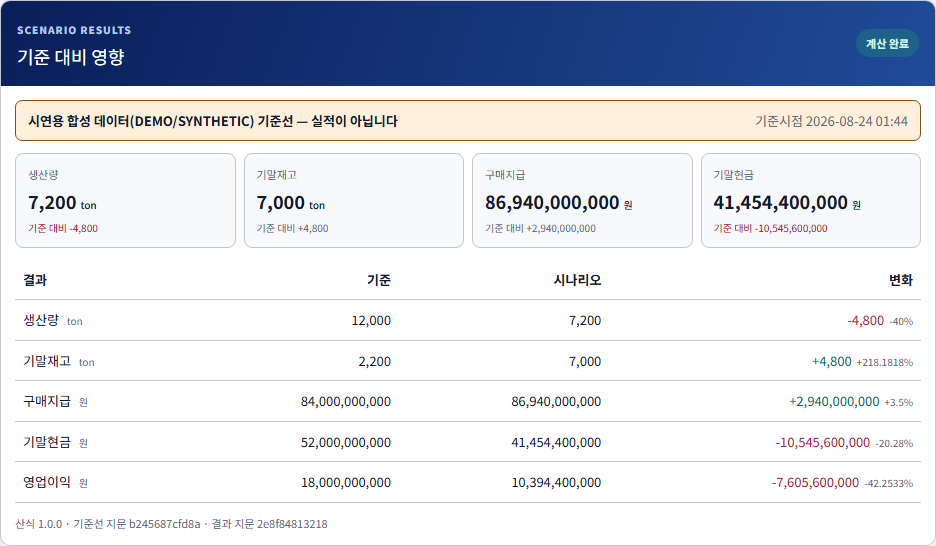

현업이 직접 생성
구매·생산·품질·물류·재무 담당자가 AI와 대화해 필요한 SW·보고서·시뮬레이터를 만듭니다.
FIELD CREATIONPRODUCT & FUNCTION GUIDE · 2026
현업이 AI와 함께 필요한 업무 SW와 시뮬레이터를 직접 만들고, 그 과정에서 생성되는 데이터를 전사 경영 온톨로지로 연결해 실제 경영 질문에 답하는 제조 경영 시스템입니다.
The product story
LAXS-M은 ‘앱을 만들어 주는 도구’에서 끝나지 않습니다. 현업이 만든 기능과 운영 데이터가 중앙 데이터 계층으로 환류되고, 승인된 온톨로지와 계산 그래프를 통해 전사 경영 판단의 근거가 됩니다.
구매·생산·품질·물류·재무 담당자가 AI와 대화해 필요한 SW·보고서·시뮬레이터를 만듭니다.
FIELD CREATION생성 앱은 상위 플랫폼의 인증·조직 권한·데이터 계약·감사 정책을 상속받아 앱인앱으로 실행됩니다.
HOST-GOVERNED각 앱과 시뮬레이터에서 관리한 데이터는 출처·버전·유효기간·조직 범위를 가진 전사 데이터 자산으로 축적됩니다.
ENTERPRISE DATAAI가 관계 후보를 제안하고 데이터 오너가 승인해, 자재·공정·주문·재고·생산·현금·손익의 의미 경로를 만듭니다.
SEMANTIC GRAPH외부지표·마스터·Legacy·현업 앱 데이터를 총합해 변화 원인, 영향 경로, 대응 대안과 실행 결과를 설명합니다.
MANAGEMENT ANSWEREnterprise ontology
같은 원료·공정·설비·고객·계정이라도 시스템마다 이름과 코드가 다릅니다. 온톨로지는 단순 검색 그래프가 아니라, 승인된 관계·버전·유효기간·조직 범위·근거 경로를 가진 기업 경영 의미지도입니다.

From question to decision
단순한 자연어 답변이 아니라, 질문에 필요한 데이터와 관계 경로를 찾고 같은 기준선에서 계산한 뒤 결정안과 실행 과제로 연결합니다.
기간·조직·제품·시나리오·결정 목적을 확정합니다.
ERP·MES·외부 파트너 포털, 기준정보, 외부지표, 현업 앱 데이터를 동일 시점 Snapshot으로 고정합니다.
환율→구매원가→재고→생산→매출채권→현금→손익의 승인된 영향 경로를 찾습니다.
기준·공격·위험안을 같은 입력 지문으로 계산하고 민감도와 최악 조건을 비교합니다.
요청자·결정권자·영향부서용 검토서와 회의 요청, 결정 조건을 생성합니다.
승인 결과를 실행 과제로 전환하고 실제 성과를 기준선과 대사해 다음 학습으로 환류합니다.
Seven product capabilities
기능의 수가 아니라, 현업 생성과 전사 데이터·온톨로지·시뮬레이션·의사결정이 실행 환류로 연결되는 것이 차별점입니다.
마스터·문서·Legacy·파일·외부지표를 등록하고 계약 기반으로 연결합니다.
동의어·유사어·계보·연관성·출처를 관리해 전사 검색과 재가공을 지원합니다.
업무 모듈별·전사 관점의 변화 영향을 결정론적으로 계산합니다.
에이전트 추천·생성·연결로 업무 SW·보고서·시뮬레이터를 만듭니다.
회사·조직·객체·작업 상태를 이해하고 질문·병목·다음 행동에 답합니다.
회사·사업부·공장·부서 권한에 따라 앱과 데이터를 만들고 전달합니다.
부서별 기능을 연결해 경영실적과 미래 시나리오를 전사 관점으로 집계합니다.
현업 생성 → 운영 데이터 → 중앙 통합 → 온톨로지 연결 → 시뮬레이션 → 회의·결정 → 실행 → 효과 측정 → 다음 생성
Execution feedback
의사결정에 사용된 근거와 계산을 고정하고, 실행 결과를 다시 측정해 다음 계획·앱·에이전트·지식에 반영합니다.
승인된 입력·수식·엔진 버전과 Snapshot을 고정해 같은 입력이면 같은 결과를 냅니다.
검토 요청 뒤 근거가 바뀌면 조용히 덮어쓰지 않고 재검토 상태로 전환합니다.
결정 전후의 목표·실적·오차·비용·효과를 함께 저장해 다음 판단의 기준선으로 씁니다.
AI는 관계 후보·해석·설명·문서화를 돕고, 승인·권한·경영 수치·발간·실행은 정책 엔진과 결정론적 계산, 사용자 결정이 통제합니다.
Enterprise trust model
그룹·법인·사업부·공장·부서 범위에 따라 데이터·앱·시뮬레이션·알림·온톨로지 경로를 제한합니다. 가상 회사는 실제 경영 데이터와 분리된 Sandbox에서만 실험합니다.
ORGANIZATION CONTEXT
전사 정책·포트폴리오·공통 기준
GROUP업종·업태·공통 경영체계
COMPANY제품·공정·손익 책임 단위
DIVISION생산·품질·물류·구매 실행 단위
PLANT / DEPT신사업·증설·경쟁사·M&A 시나리오
VIRTUAL생성 앱은 자체 로그인과 별도 보안을 만들지 않고 플랫폼 인증·조직·감사·데이터 정책을 상속합니다.
범위나 권한을 해석할 수 없으면 전사 공용으로 간주하지 않고 노출을 차단합니다.
외부 참여자는 기존 포털을 사용하고, 경영 시스템은 MCP·계약 기반으로 검증된 데이터만 가져옵니다.
출처·버전·유효기간·승인·조직 범위·근거 경로를 보존해 결과와 판단을 재현합니다.
Product feature map
모든 기능을 한 화면에 욱여넣지 않습니다. 경영·생성·데이터·거버넌스·AI 운영이 각각 독립된 작업면을 가지며 문맥형 AI 보좌 레일을 공유합니다.
목록이 아니라 사용자가 실제로 입력·생성·연결·계산·검토·회의·발간하는 상태를 중심으로 설명합니다. 제품명은 LAXS-M이며, 자비스는 사용자 문맥을 이어 주는 AI 경영비서입니다.


지금 결정해야 할 일과 데이터·SW·Twin의 상태를 첫 화면에서 확인합니다.
무엇부터 해야 할지 모르는 사용자에게 필요한 데이터와 실행 순서를 먼저 제안합니다.

현업의 요구를 WBS·AI 제작 스트림·코드 검증·실행 앱으로 전환합니다.

전체 제작 단계와 WBS, 현재 작업, 사용자 결정, AI 활동, 다음 전환 조건을 숨기지 않습니다.
표준·논문·사규·업무 문서를 승인된 지식팩으로 구성해 AI와 현업이 함께 사용합니다.

전사 공통 기준정보와 데이터 자산의 의미·소유·품질·위치를 함께 관리합니다.

데이터 신뢰와 회사·사업부·공장·부서의 접근 범위를 같은 운영 계약으로 관리합니다.


에이전트를 실제로 구성하고 역할·모델·스킬·순서·사용자 검토 지점을 연결합니다.


인증된 데이터 판과 동일 기준선에서 가정을 바꾸고 생산·재고·현금·손익 영향을 계산합니다.

시뮬레이션 결과를 세 관점 검토서로 만들고, 필요한 회의와 결정 기록을 한 안건에서 관리합니다.

승인된 결정 Snapshot을 실제 보고서로 렌더링하고 독자·보안등급·게이트에 맞춰 발간합니다.

경영자가 먼저 봐야 할 데이터 계약·비교 불가·결정 대기·운영 리스크와 다음 행동을 한 장에 보여줍니다.

First vertical end-to-end flow
첫 적용은 기능별 데모가 아니라 구매·물류·생산·재무가 연결되는 수직 실행 흐름입니다. 현재는 검증 시나리오와 판정 계약이며, Shadow Pilot에서 실제 기준선과 비교해 효과를 측정합니다.
계약 단가·환율·수량·납기
Legacy Portal / MCP
ETA·야드·재고일수
생산계획·수율·병목
수주·납기·매출채권
운전자본·원가·이익
환율 +10% · 원료 도입 +15일 지연 · 전기료 +12%. 수치는 검증 입력이며 경영 성과가 아닙니다.
생산량·재고·운전자본·현금·영업이익 변화와 민감 요인을 동일 입력 지문으로 산출합니다.
구매량·생산계획·자금조달 대안을 비교하고 회의 요청, 결정권자, 실행 책임자와 기한을 남깁니다.
기존 분석 소요시간·수작업·오차와 Shadow Pilot 결과를 비교하기 전에는 ROI를 확정하지 않습니다.
90-day proof plan
효과 수치를 먼저 약속하지 않습니다. 시작 시 기준선과 목표를 합의하고, 데이터 대사·재현성·보안·업무 효과를 통과한 경우에만 다음 확산 단계로 이동합니다.
원료 구매 1개 흐름, 데이터 오너, 현재 리드타임·수작업·오차·비용 기준선을 확정합니다.
원천 Snapshot, Crosswalk, 품질 규칙, 조직 범위와 CERTIFIED 기준선 후보를 구성합니다.
과거 기간 재현과 실제 업무 병행 운영으로 동일 입력 재현성·결과 차이·수정량을 측정합니다.
검토서·회의·실행과제를 완주하고 효과·운영비·리스크를 근거로 확대·보완·중단을 결정합니다.
Coexistence and positioning
LAXS-M의 목적은 전사 시스템을 한 번에 교체하는 것이 아닙니다. 원천과 실행의 책임은 기존 시스템에 남기고, 분절된 데이터를 경영 질문과 실행 결정으로 연결하는 상위 계층을 제공합니다.
| 기존 시스템·대안 | 권장 관계 | 기존 시스템이 계속 맡는 일 | LAXS-M이 추가하는 일 |
|---|---|---|---|
| ERP · MES · WMS | 유지 + 보완 | 정본 거래·생산·재고 기록과 현장 실행 | Snapshot·계약 기반 연결, 온톨로지 영향 경로, 전사 시뮬레이션과 결정 패키지 |
| EPM · BI | 보완 · 선택적 확장 | 계획·실적 집계, 정형 리포트와 대시보드 | 현업 앱 데이터 환류, 원인 경로, 복합 시나리오, 회의·결정·효과 측정의 실행 환류 |
| Low-code | 선택적 대안 | 화면·워크플로우 중심의 범용 앱 제작 | AI 에이전트 생성, Host 권한 상속, 데이터 계약, 전사 의미망 환류가 필요한 업무 앱 |
| Lakehouse · Data Platform | 보완 | 대규모 저장·처리·분석 기반 | 경영 의미·조직 범위·승인 관계·결정론적 계산·실행 책임의 운영 계층 |
| 전문 Digital Twin | 연계 + 보완 | 설비·공정별 고정밀 물리·운영 모델 | 업무 Twin과 전문 모델 결과를 현금·손익·전사 의사결정 관점으로 연결 |
| RPA · 범용 Agent Platform | 비대상 + 보완 | 반복 작업 자동화와 범용 에이전트 실행 | 제조 경영 의미 모델, 데이터 신뢰, 결정 Gate, 효과 측정이 필요한 경영 실행 환류 |
Why it matters
생성 기능은 시작점입니다. 각 조직의 기능과 데이터가 공통 의미체계와 경영 실행 환류로 축적될수록 다른 모델로 교체해도 지식·품질·통제·경영 맥락은 회사에 남습니다.
IT 대기열 없이 현업이 필요한 기능을 직접 구체화합니다.
모든 생성 앱이 플랫폼 인증·권한·데이터 계약을 상속합니다.
앱과 시스템의 데이터가 동일한 경영 의미망으로 누적됩니다.
LLM 설명과 수치 계산을 분리해 경영 결과를 재현합니다.
분석을 회의·결정·업무 적용·효과 측정으로 이어갑니다.
작업 난이도에 맞는 모델 라우팅과 캐시로 골든포인트를 찾습니다.
AI Learning · Data Protection · RAG
현재 구현과 파일럿 전 추가 통제를 분리해, 제품 기능을 과장하지 않고 보안·법무·현업이 같은 기준으로 검토하게 합니다.
모델 가중치를 온라인으로 갱신하지 않습니다. 상호작용·재작업·결정·실제 결과를 기록하고, RAG·업무 규칙·에이전트 스킬 개선안을 평가·승인해 새 버전으로 반영합니다.
CURRENT · 통제형 운영 학습 기반외부 API로 보낸 최소 문맥은 공급자 시스템에서 처리됩니다. 로컬 RAG·승인 필터는 현재 기반이며, 데이터 등급·마스킹·보존·Egress 원장은 파일럿 전 필수 통제입니다.
GAP · 완전 비노출 표현 금지사람은 자료의 정본·보안등급·적용 범위를 승인합니다. 문서 분할·로컬 임베딩·유사도 검색·조직/기간 필터·근거 연결은 시스템이 자동 수행합니다.
CURRENT · 자동 검색 + 사람의 자료 거버넌스FROM FIELD CREATION TO MANAGEMENT DECISION
LAXS-M은 현업이 필요한 기능을 직접 만드는 자유와, 전사 데이터·온톨로지·계산·권한·의사결정이 지켜야 할 통제를 함께 제공합니다.